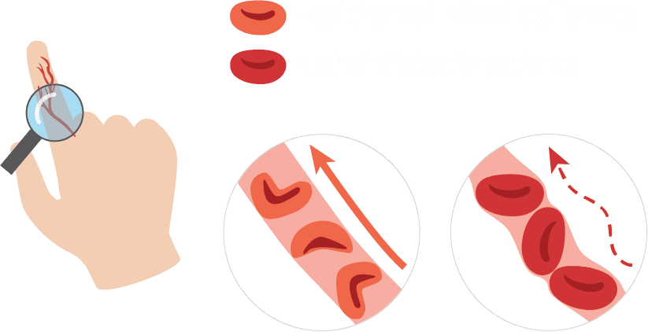

1. HbA1c, the key for prognosis and management of diabetes
4 million people die every year from complications of diabetes. An elevated level of HbA1c indicates an increase in blood viscosity, which is a significant cause of serious medical complications.
2. Problem: Absence of HbA1c monitoring home device
Although HbA1c testing is a vital step for effective diabetes management, there has never been an at-home monitoring device for diabetic patients as accurate and precise as laboratory devices.

3. A1C Alert, the most accurate point-of-care testing device
OrangeBiomed develops a POCT (point-of-care testing) device achieving both accuracy and precision. We believe A1C Alert can improve the quality of life for diabetic patients.